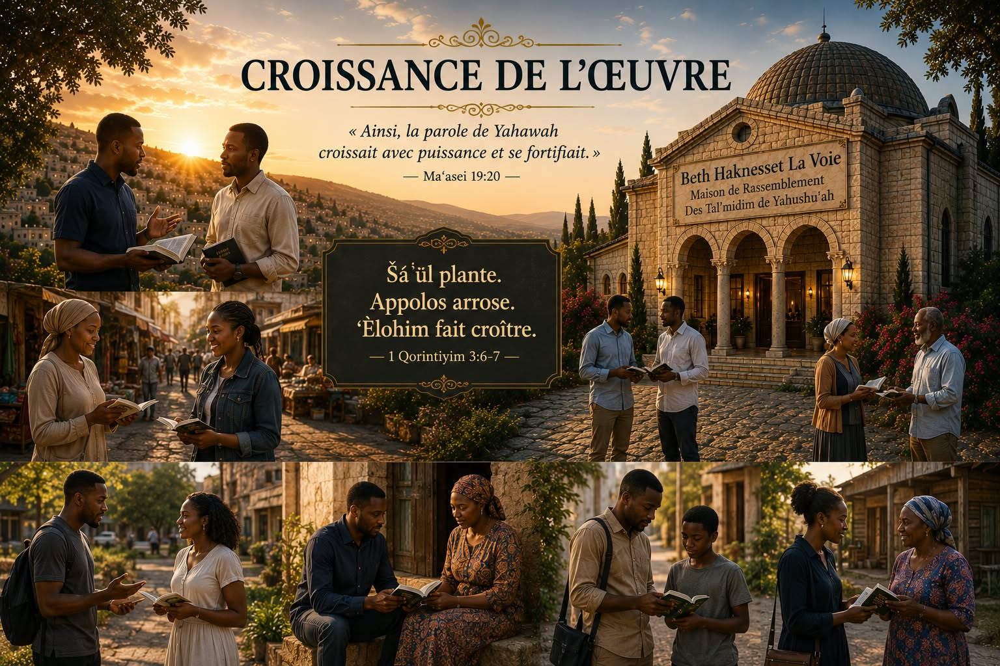

« La parole de Yahawah continuait à croître et à se répandre. »
— Maʿasei 12:24
La rubrique Croissance de l'Œuvre retrace les principaux progrès réalisés au cours de l'année écoulée dans l'œuvre de restauration. Elle présente, au moyen de tableaux, de graphiques, de cartes et de statistiques, les différentes étapes franchies dans la diffusion du message, le développement des ressources, les Miqra'ei Qadoshim, les publications et les projets accomplis.
Au-delà des chiffres, cette rubrique met également à l'honneur les Mebasserim qui, dans différents pays, ont contribué fidèlement à l'avancement de l'œuvre au cours de l'année. Leur engagement, leur persévérance et leur disponibilité constituent un encouragement pour tous ceux qui participent à la proclamation de la Besorah Tobah du Malkuwt.
Chaque édition annuelle présentera les principales réalisations, les nouveaux projets, les défis rencontrés ainsi que les perspectives pour l'année à venir, afin de rendre compte avec transparence de la progression de l'œuvre de restauration.
Yon rezime ane a nan kèk chif kle.
— à définir —
Haïti (pôle principal), États-Unis et Canada (diaspora active).
Port-au-Prince (principal pôle), Cap-Haïtien, Delmas et plusieurs autres régions d'Haïti.
Nombre de Ha'Meshartim Ha'Ozrim par domaine.
Répartition des Mebasserim par pays — nombre, principaux travaux réalisés, projets marquants.
Sur les 28 derniers jours de l'année écoulée, plus de la moitié de l'audience se trouve en Haïti. La diaspora représente également une part importante, notamment aux États-Unis et au Canada.
Ces chiffres ne servent pas à nous glorifier. Ils nous aident à mieux comprendre où le message est reçu afin de mieux servir celles et ceux qui recherchent la vérité.
Les données démographiques montrent que l'audience est principalement composée d'adultes âgés de 25 à 44 ans — la tranche d'âge où l'on construit une famille, où l'on prend des responsabilités et où l'on recherche des fondements solides.
Les hommes sont actuellement majoritaires ; le désir de l'œuvre est que davantage de femmes découvrent elles aussi le message de restauration, et que chaque foyer puisse grandir ensemble dans la connaissance de Ha-Bôre.
— carte à insérer —
Les objectifs de la nouvelle année.
Tableau comparatif de l'année précédente et de l'année en cours.
| Domaine | Année précédente | Cette année | Progression |
|---|---|---|---|
| Qehilot | ··· | ··· | ··· |
| Pays atteints | ··· | ··· | ··· |
| Tal'midim | ··· | ··· | ··· |
| Zaqenim | ··· | ··· | ··· |
| Ha'Meshartim Ha'Ozrim | ··· | ··· | ··· |
| Mebasserim | ··· | ··· | ··· |
| Publications | ··· | ··· | ··· |
| Langues | ··· | ··· | ··· |
| Miqra'ei Qadoshim | ··· | ··· | ··· |
Pour chacun, avec son accord — pays, domaine principal, contributions durant l'année et un court témoignage ou verset d'encouragement.